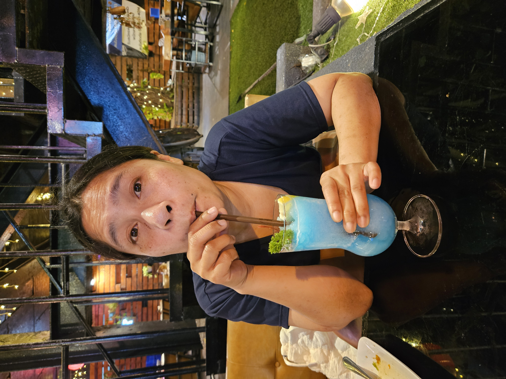
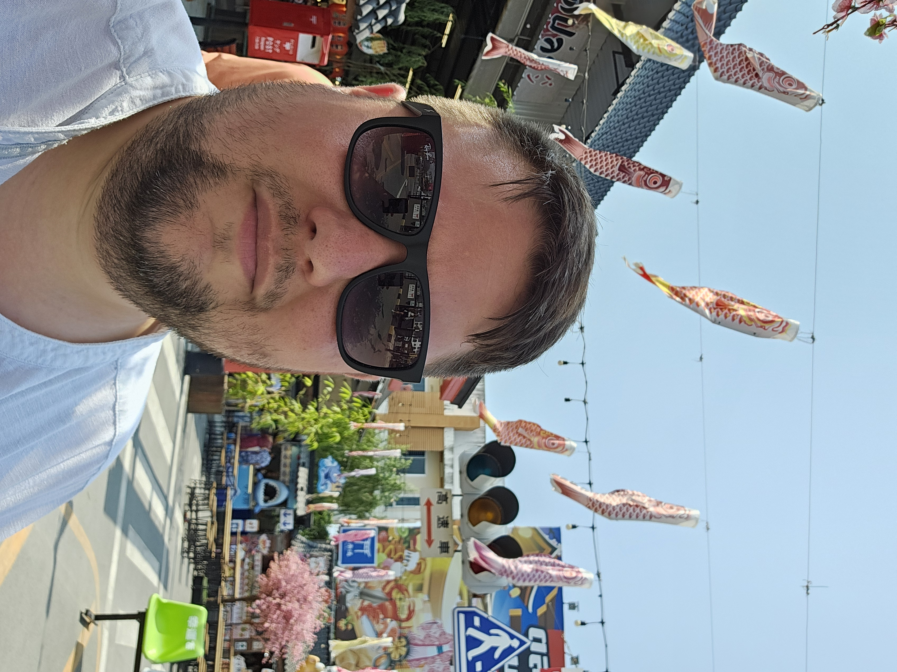
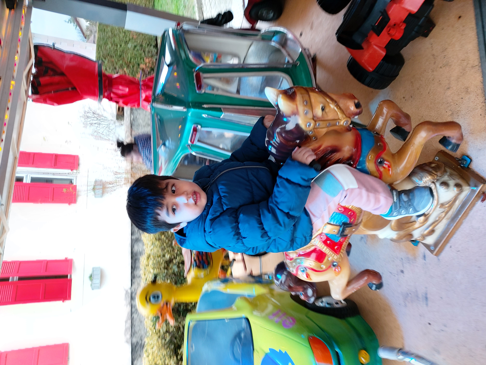
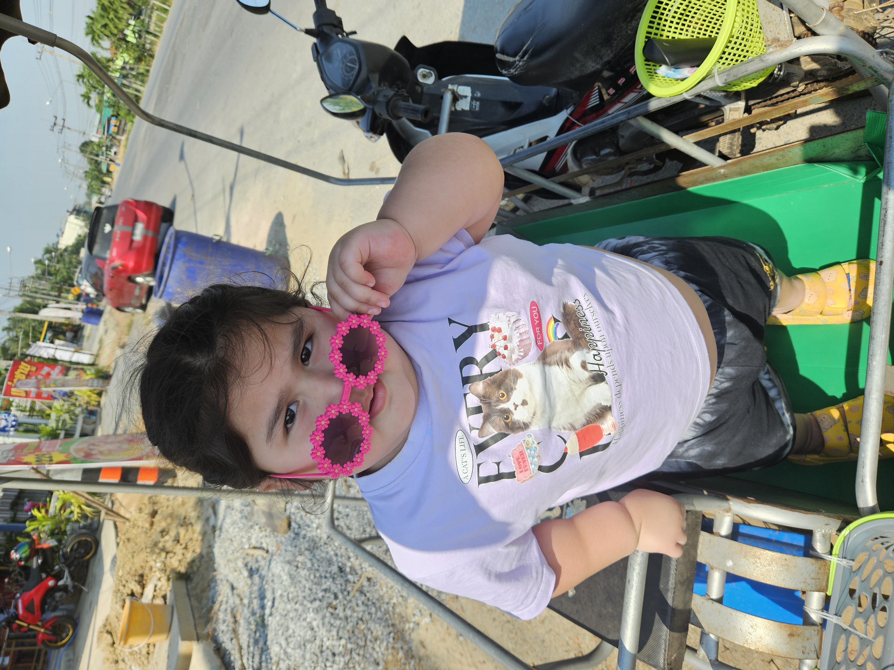

Les membres de notre famille
Découvrez les membres de notre famille, leurs passions, leurs métiers et leurs histoires. Nous sommes fiers de partager avec vous notre histoire familiale et nos liens qui nous unissent à travers les générations.
Les personnes de notre famille

Maman
Nom : Bow
Naissance : 1984
Travail : Mère au foyer
Préférence : TikTok
Maman
Notre maman est une femme exceptionnelle, toujours prête à aider les autres et à partager son amour et sa sagesse. Elle est le pilier de notre famille et nous inspire chaque jour par sa force et sa gentillesse.
Ses passions
- La cuisine : elle adore préparer de délicieux plats.
- TikTok : elle aime regarder des vidéos.
- La climatisation : une grande histoire d’amour.
Son métier
Maman travaille comme mère au foyer, un rôle essentiel dans notre famille.

Papa
Nom : Mathieu
Naissance : 1986
Travail : Secrétaire municipal
Préférence : Les jeux vidéo
Papa
Notre papa est un homme dévoué et travailleur, qui nous a appris l'importance de la persévérance et de la responsabilité. Il est notre guide et notre modèle, et nous sommes reconnaissants pour tout ce qu'il fait pour nous.
Ses passions
- Les jeux vidéo : il adore jouer à ses jeux préférés, rétro ou non.
- Son travail : il aime son travail et y consacre beaucoup de temps et d'énergie.
- Ses collègues : il adore interagir avec ses collègues et passer du temps avec eux.
- La cuisine : il aime cuisiner et préparer de bons repas pour sa famille.
- ChatGPT : il aime discuter avec ChatGPT et apprendre de nouvelles choses.
- GTA et Rockstar Games : il adore jouer à ces jeux vidéo et cet univers.
Son métier
Papa travaille comme Secrétaire municipal à la Commune de Commugny, dans le canton de Vaud en Suisse.

Grand frère
Nom : Mario
Naissance : 2018
Travail : Écolier
Préférence : YouTube
Mario
Mario est notre grand frère, un jeune garçon courageux et déterminé. Il fait face à des défis uniques en raison de son TSA (trouble du spectre de l'autisme), mais il nous montre chaque jour la valeur de la patience, de la compréhension et de l'amour inconditionnel.
Ses passions
- YouTube : il adore regarder des vidéos et scroller.
- Faire des bruits : il aime faire des bruits avec la bouche.
- Manger : il adore manger les plats de sa maman.
Son métier
Mario est encore jeune et n'a pas encore de métier, mais il est en train d'apprendre et de grandir chaque jour.

Petite soeur
Nom : Araya
Naissance : 2019
Travail : Écolière
Préférence : Le fromage
Araya
Notre petite soeur est une personne pleine de vie et de créativité. Elle apporte de la joie et de l'énergie à notre famille, et nous sommes fiers de la voir grandir et s'épanouir dans ses passions et ses talents.
Ses passions
- YouTube : elle adore regarder des vidéos et scroller.
- Netflix : elle aime regarder des séries et des films sur Netflix.
- Faire des bêtises : elle aime embêter son frère et se faire gronder par ses parents.
- Manger : elle adore manger les plats de sa maman et de son papa.
- Faire des blagues : elle aime faire des blagues et rigoler avec sa famille.
- Le fromage : elle adore manger du fromage.